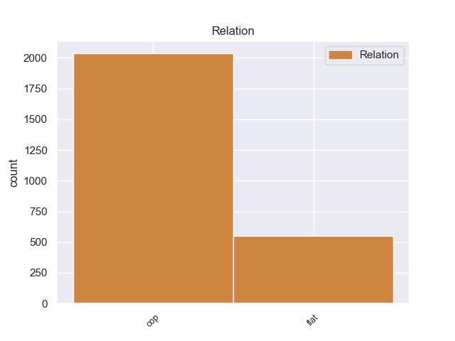
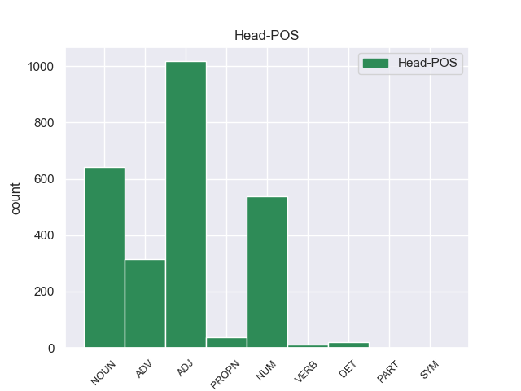
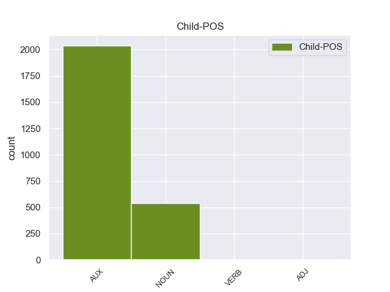

Distribution of features within this leaf



Morphosyntax Rules sorted by frequency.
- When the dependent token is the copula(cop) of the head token, and the head token is ADJ and the dependent token is AUX, the Gender needs to be Neut.
1 Оно _ _ _ _ 0 _ _ _
2 было быть AUX _ Aspect=Imp|Gender=Neut|Mood=Ind|Number=Sing|Tense=Past|VerbForm=Fin|Voice=Act 4 cop 4:cop _
3 неправдоподобно _ _ _ _ 0 _ _ _
4 тихим тихий ADJ _ Case=Ins|Degree=Pos|Gender=Neut|Number=Sing 0 _ _ _
5 , _ _ _ _ 0 _ _ _
6 это _ _ _ _ 0 _ _ _
7 стадо _ _ _ _ 0 _ _ _
8 ; _ _ _ _ 0 _ _ _
9 коровы _ _ _ _ 0 _ _ _
10 лежали _ _ _ _ 0 _ _ _
11 , _ _ _ _ 0 _ _ _
12 словно _ _ _ _ 0 _ _ _
13 затаясь _ _ _ _ 0 _ _ _
14 , _ _ _ _ 0 _ _ _
15 чем-то _ _ _ _ 0 _ _ _
16 опасным _ _ _ _ 0 _ _ _
17 веяло _ _ _ _ 0 _ _ _
18 от _ _ _ _ 0 _ _ _
19 их _ _ _ _ 0 _ _ _
20 бесшумности _ _ _ _ 0 _ _ _
21 . _ _ _ _ 0 _ _ _
1 Можно можно ADV _ Degree=Pos 0 _ _ _
2 было быть AUX _ Aspect=Imp|Gender=Neut|Mood=Ind|Number=Sing|Tense=Past|VerbForm=Fin|Voice=Act 1 cop 1:cop _
3 подумать _ _ _ _ 0 _ _ _
4 , _ _ _ _ 0 _ _ _
5 что _ _ _ _ 0 _ _ _
6 грибы _ _ _ _ 0 _ _ _
7 и _ _ _ _ 0 _ _ _
8 лягушки _ _ _ _ 0 _ _ _
9 пребывают _ _ _ _ 0 _ _ _
10 в _ _ _ _ 0 _ _ _
11 некой _ _ _ _ 0 _ _ _
12 таинственной _ _ _ _ 0 _ _ _
13 связи _ _ _ _ 0 _ _ _
14 , _ _ _ _ 0 _ _ _
15 обеспечивающей _ _ _ _ 0 _ _ _
16 им _ _ _ _ 0 _ _ _
17 избыточное _ _ _ _ 0 _ _ _
18 бытие _ _ _ _ 0 _ _ _
19 . _ _ _ _ 0 _ _ _
1 И _ _ _ _ 0 _ _ _
2 здесь _ _ _ _ 0 _ _ _
3 незримый _ _ _ _ 0 _ _ _
4 стеклянный _ _ _ _ 0 _ _ _
5 купол _ _ _ _ 0 _ _ _
6 отделял _ _ _ _ 0 _ _ _
7 их _ _ _ _ 0 _ _ _
8 от _ _ _ _ 0 _ _ _
9 зрителей _ _ _ _ 0 _ _ _
10 , _ _ _ _ 0 _ _ _
11 от _ _ _ _ 0 _ _ _
12 всего _ _ _ _ 0 _ _ _
13 , _ _ _ _ 0 _ _ _
14 что _ _ _ _ 0 _ _ _
15 не _ _ _ _ 0 _ _ _
16 было быть AUX _ Aspect=Imp|Gender=Neut|Mood=Ind|Number=Sing|Tense=Past|VerbForm=Fin|Voice=Act 18 cop 18:cop _
17 их _ _ _ _ 0 _ _ _
18 миром мир NOUN _ Animacy=Inan|Case=Ins|Gender=Masc|Number=Sing 0 _ _ _
19 . _ _ _ _ 0 _ _ _
1 Вообще _ _ _ _ 0 _ _ _
2 в _ _ _ _ 0 _ _ _
3 45-м _ _ _ _ 0 _ _ _
4 году _ _ _ _ 0 _ _ _
5 еще _ _ _ _ 0 _ _ _
6 милиции _ _ _ _ 0 _ _ _
7 , _ _ _ _ 0 _ _ _
8 как _ _ _ _ 0 _ _ _
9 таковой _ _ _ _ 0 _ _ _
10 , _ _ _ _ 0 _ _ _
11 в _ _ _ _ 0 _ _ _
12 Минске Минск PROPN _ Animacy=Inan|Case=Loc|Gender=Masc|Number=Sing 0 _ _ _
13 не _ _ _ _ 0 _ _ _
14 было быть AUX _ Aspect=Imp|Gender=Neut|Mood=Ind|Number=Sing|Tense=Past|VerbForm=Fin|Voice=Act 12 cop 12:cop SpaceAfter=No
15 , _ _ _ _ 0 _ _ _
16 в _ _ _ _ 0 _ _ _
17 основном _ _ _ _ 0 _ _ _
18 ее _ _ _ _ 0 _ _ _
19 функцию _ _ _ _ 0 _ _ _
20 выполняли _ _ _ _ 0 _ _ _
21 партизаны _ _ _ _ 0 _ _ _
22 , _ _ _ _ 0 _ _ _
23 вооруженные _ _ _ _ 0 _ _ _
24 и _ _ _ _ 0 _ _ _
25 одетые _ _ _ _ 0 _ _ _
26 кто _ _ _ _ 0 _ _ _
27 во _ _ _ _ 0 _ _ _
28 что _ _ _ _ 0 _ _ _
29 . _ _ _ _ 0 _ _ _
1 Синергизм _ _ _ _ 0 _ _ _
2 хемолюминесценции _ _ _ _ 0 _ _ _
3 можно _ _ _ _ 0 _ _ _
4 было _ _ _ _ 0 _ _ _
5 наблюдать _ _ _ _ 0 _ _ _
6 при _ _ _ _ 0 _ _ _
7 исчезающе _ _ _ _ 0 _ _ _
8 малых _ _ _ _ 0 _ _ _
9 концентрациях _ _ _ _ 0 _ _ _
10 второго _ _ _ _ 0 _ _ _
11 катализатора _ _ _ _ 0 _ _ _
12 - _ _ _ _ 0 _ _ _
13 атомов _ _ _ _ 0 _ _ _
14 рутения _ _ _ _ 0 _ _ _
15 в _ _ _ _ 0 _ _ _
16 растворе _ _ _ _ 0 _ _ _
17 было быть AUX _ Aspect=Imp|Gender=Neut|Mood=Ind|Number=Sing|Tense=Past|VerbForm=Fin|Voice=Act 21 cop 21:cop _
18 в _ _ _ _ 0 _ _ _
19 100000 _ _ _ _ 0 _ _ _
20 раз _ _ _ _ 0 _ _ _
21 меньше мало NUM _ _ 0 _ _ _
22 , _ _ _ _ 0 _ _ _
23 чем _ _ _ _ 0 _ _ _
24 атомов _ _ _ _ 0 _ _ _
25 церия _ _ _ _ 0 _ _ _
26 , _ _ _ _ 0 _ _ _
27 а _ _ _ _ 0 _ _ _
28 интенсивность _ _ _ _ 0 _ _ _
29 светового _ _ _ _ 0 _ _ _
30 потока _ _ _ _ 0 _ _ _
31 при _ _ _ _ 0 _ _ _
32 этом _ _ _ _ 0 _ _ _
33 возрастала _ _ _ _ 0 _ _ _
34 в _ _ _ _ 0 _ _ _
35 100 _ _ _ _ 0 _ _ _
36 раз _ _ _ _ 0 _ _ _
37 . _ _ _ _ 0 _ _ _
1 В _ _ _ _ 0 _ _ _
2 моей _ _ _ _ 0 _ _ _
3 жизни _ _ _ _ 0 _ _ _
4 это _ _ _ _ 0 _ _ _
5 было быть AUX _ Aspect=Imp|Gender=Neut|Mood=Ind|Number=Sing|Tense=Past|VerbForm=Fin|Voice=Act 6 cop 6:cop _
6 одним один DET _ Case=Ins|Degree=Pos|Gender=Neut|Number=Sing 0 _ _ _
7 из _ _ _ _ 0 _ _ _
8 самых _ _ _ _ 0 _ _ _
9 важных _ _ _ _ 0 _ _ _
10 событий _ _ _ _ 0 _ _ _
11 , _ _ _ _ 0 _ _ _
12 куда _ _ _ _ 0 _ _ _
13 важнее _ _ _ _ 0 _ _ _
14 первой _ _ _ _ 0 _ _ _
15 близости _ _ _ _ 0 _ _ _
16 с _ _ _ _ 0 _ _ _
17 женщиной _ _ _ _ 0 _ _ _
18 , _ _ _ _ 0 _ _ _
19 первого _ _ _ _ 0 _ _ _
20 выстрела _ _ _ _ 0 _ _ _
21 , _ _ _ _ 0 _ _ _
22 направленного _ _ _ _ 0 _ _ _
23 в _ _ _ _ 0 _ _ _
24 меня _ _ _ _ 0 _ _ _
25 , _ _ _ _ 0 _ _ _
26 важнее _ _ _ _ 0 _ _ _
27 всех _ _ _ _ 0 _ _ _
28 книжных _ _ _ _ 0 _ _ _
29 открытий _ _ _ _ 0 _ _ _
30 . _ _ _ _ 0 _ _ _
1 Конечно _ _ _ _ 0 _ _ _
2 , _ _ _ _ 0 _ _ _
3 среди _ _ _ _ 0 _ _ _
4 покидающих покидать VERB _ Aspect=Imp|Case=Gen|Number=Plur|Tense=Pres|VerbForm=Part|Voice=Act 0 _ _ _
5 город _ _ _ _ 0 _ _ _
6 было быть AUX _ Aspect=Imp|Gender=Neut|Mood=Ind|Number=Sing|Tense=Past|VerbForm=Fin|Voice=Act 4 cop 4:cop _
7 много _ _ _ _ 0 _ _ _
8 евреев _ _ _ _ 0 _ _ _
9 , _ _ _ _ 0 _ _ _
10 хотя _ _ _ _ 0 _ _ _
11 немало _ _ _ _ 0 _ _ _
12 их _ _ _ _ 0 _ _ _
13 и _ _ _ _ 0 _ _ _
14 осталось _ _ _ _ 0 _ _ _
15 , _ _ _ _ 0 _ _ _
16 но _ _ _ _ 0 _ _ _
17 в _ _ _ _ 0 _ _ _
18 основном _ _ _ _ 0 _ _ _
19 все _ _ _ _ 0 _ _ _
20 же _ _ _ _ 0 _ _ _
21 бежали _ _ _ _ 0 _ _ _
22 коммунисты _ _ _ _ 0 _ _ _
23 и _ _ _ _ 0 _ _ _
24 интеллигенция _ _ _ _ 0 _ _ _
25 . _ _ _ _ 0 _ _ _
1 ( _ _ _ _ 0 _ _ _
2 В _ _ _ _ 0 _ _ _
3 среднем _ _ _ _ 0 _ _ _
4 по _ _ _ _ 0 _ _ _
5 стране _ _ _ _ 0 _ _ _
6 таких _ _ _ _ 0 _ _ _
7 было быть AUX _ Aspect=Imp|Gender=Neut|Mood=Ind|Number=Sing|Tense=Past|VerbForm=Fin|Voice=Act 9 cop 9:cop _
8 7 _ _ _ _ 0 _ _ _
9 % % SYM _ _ 0 _ _ _
10 ) _ _ _ _ 0 _ _ _
11 . _ _ _ _ 0 _ _ _
non-conforming Examples:
1 Начальник _ _ _ _ 0 _ _ _
2 областного _ _ _ _ 0 _ _ _
3 управления _ _ _ _ 0 _ _ _
4 связи _ _ _ _ 0 _ _ _
5 Семен _ _ _ _ 0 _ _ _
6 Еремеевич _ _ _ _ 0 _ _ _
7 был быть AUX _ Aspect=Imp|Gender=Masc|Mood=Ind|Number=Sing|Tense=Past|VerbForm=Fin|Voice=Act 8 cop 8:cop _
8 человек человек NOUN _ Animacy=Anim|Case=Nom|Gender=Masc|Number=Sing 0 _ _ _
9 простой _ _ _ _ 0 _ _ _
10 , _ _ _ _ 0 _ _ _
11 приходил _ _ _ _ 0 _ _ _
12 на _ _ _ _ 0 _ _ _
13 работу _ _ _ _ 0 _ _ _
14 всегда _ _ _ _ 0 _ _ _
15 вовремя _ _ _ _ 0 _ _ _
16 , _ _ _ _ 0 _ _ _
17 здоровался _ _ _ _ 0 _ _ _
18 с _ _ _ _ 0 _ _ _
19 секретаршей _ _ _ _ 0 _ _ _
20 за _ _ _ _ 0 _ _ _
21 руку _ _ _ _ 0 _ _ _
22 и _ _ _ _ 0 _ _ _
23 иногда _ _ _ _ 0 _ _ _
24 даже _ _ _ _ 0 _ _ _
25 писал _ _ _ _ 0 _ _ _
26 в _ _ _ _ 0 _ _ _
27 стенгазету _ _ _ _ 0 _ _ _
28 заметки _ _ _ _ 0 _ _ _
29 под _ _ _ _ 0 _ _ _
30 псевдонимом _ _ _ _ 0 _ _ _
31 " _ _ _ _ 0 _ _ _
32 Муха _ _ _ _ 0 _ _ _
33 " _ _ _ _ 0 _ _ _
34 . _ _ _ _ 0 _ _ _
1 По _ _ _ _ 0 _ _ _
2 его _ _ _ _ 0 _ _ _
3 мнению _ _ _ _ 0 _ _ _
4 , _ _ _ _ 0 _ _ _
5 Ефимова _ _ _ _ 0 _ _ _
6 всегда _ _ _ _ 0 _ _ _
7 была быть AUX _ Aspect=Imp|Gender=Fem|Mood=Ind|Number=Sing|Tense=Past|VerbForm=Fin|Voice=Act 8 cop 8:cop _
8 настойчива настойчивый ADJ _ Degree=Pos|Gender=Fem|Number=Sing|Variant=Short 0 _ _ _
9 и _ _ _ _ 0 _ _ _
10 требовательна _ _ _ _ 0 _ _ _
11 . _ _ _ _ 0 _ _ _
1 На _ _ _ _ 0 _ _ _
2 этот _ _ _ _ 0 _ _ _
3 раз _ _ _ _ 0 _ _ _
4 она _ _ _ _ 0 _ _ _
5 была быть AUX _ Aspect=Imp|Gender=Fem|Mood=Ind|Number=Sing|Tense=Past|VerbForm=Fin|Voice=Act 8 cop 8:cop _
6 в _ _ _ _ 0 _ _ _
7 сильном _ _ _ _ 0 _ _ _
8 возбуждении возбуждение NOUN _ Animacy=Inan|Case=Loc|Gender=Neut|Number=Sing 0 _ _ _
9 и _ _ _ _ 0 _ _ _
10 мяла _ _ _ _ 0 _ _ _
11 в _ _ _ _ 0 _ _ _
12 кулаке _ _ _ _ 0 _ _ _
13 кружевной _ _ _ _ 0 _ _ _
14 платочек _ _ _ _ 0 _ _ _
15 . _ _ _ _ 0 _ _ _
1 - _ _ _ _ 0 _ _ _
2 Вас _ _ _ _ 0 _ _ _
3 пугает _ _ _ _ 0 _ _ _
4 , _ _ _ _ 0 _ _ _
5 что _ _ _ _ 0 _ _ _
6 я _ _ _ _ 0 _ _ _
7 была быть AUX _ Aspect=Imp|Gender=Fem|Mood=Ind|Number=Sing|Tense=Past|VerbForm=Fin|Voice=Act 9 cop 9:cop _
8 в _ _ _ _ 0 _ _ _
9 оккупации оккупация NOUN _ Animacy=Inan|Case=Loc|Gender=Fem|Number=Sing 0 _ _ _
10 . _ _ _ _ 0 _ _ _
1 Он _ _ _ _ 0 _ _ _
2 очень _ _ _ _ 0 _ _ _
3 любил _ _ _ _ 0 _ _ _
4 , _ _ _ _ 0 _ _ _
5 чтобы _ _ _ _ 0 _ _ _
6 на _ _ _ _ 0 _ _ _
7 письменном _ _ _ _ 0 _ _ _
8 столе стол NOUN _ Animacy=Inan|Case=Loc|Gender=Masc|Number=Sing 0 _ _ _
9 всегда _ _ _ _ 0 _ _ _
10 был быть AUX _ Aspect=Imp|Gender=Masc|Mood=Ind|Number=Sing|Tense=Past|VerbForm=Fin|Voice=Act 8 cop 8:cop _
11 полный _ _ _ _ 0 _ _ _
12 , _ _ _ _ 0 _ _ _
13 можно _ _ _ _ 0 _ _ _
14 даже _ _ _ _ 0 _ _ _
15 сказать _ _ _ _ 0 _ _ _
16 , _ _ _ _ 0 _ _ _
17 блестящий _ _ _ _ 0 _ _ _
18 порядок _ _ _ _ 0 _ _ _
19 . _ _ _ _ 0 _ _ _